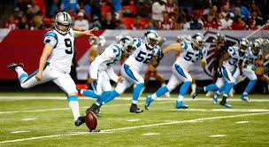
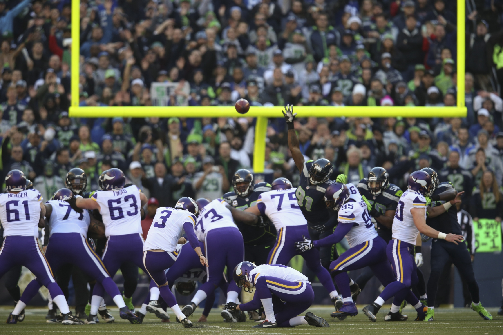

A game starts with the kickoff. The ball is placed on a kicking tee at the defense's 30-yard line, and a special kicker (a "placekicker") kicks the ball to the offense A kick return man from the offense will try to catch the ball and advance it by running. Where he is stopped is the point from which the offense will begin its drive, or series of offensive plays. When a kickoff is caught in the offense's own end zone, the kick returner can either run the ball out of the end zone, or kneel in the end zone to signal a touchback - a sign to stop the play. The ball is then placed on the 20-yard line, where the offense begins play.
When the offense gets to fourth down and they are too far away to kick a field goal, they will usually punt the ball. Although this gives the ball to the other team, it gives them the ball much further down the field in worse field position.
The punter is the main player on the punting team. He kicks the ball as high and far as he can. There are two players at each side of the field called ends. These players release down the field as soon as the ball is snapped. They try to get to the ball carrier just after he catches the ball to tackle him. Prior to the ball being kicked the rest of the team blocks the defenders so they can't block the punt. Once the ball is kicked they release down the field to help tackle the ball carrier.
On the other side of the kicking and punting special teams are the punt and kick return teams. These teams are made up of a returner and blockers. They try to set up a return and gain yardage after the ball is caught. The punt returner is generally a fast player who also plays wide receiver, running back, or in the secondary.
If the offense cannot score a touchdown, it may try to kick a field goal. Field goals are worth three points and often are the deciding plays in the last seconds of close games. They can be attempted from anywhere on the field on any down, but generally are kicked from inside the defense's 45-yard line on fourth down. For a field goal to be "good", the placekicker (or field goal kicker) must kick the ball through the goal-post uprights and over the crossbar. The defense tries to block the kick and stop the ball from reaching the goal post.
Immediately following a touchdown, the ball is placed at the opponent's two-yard line, where the offense has two options. Usually the offense will kick an extra point, also called the point after touchdown, conversion, or PAT. If the offense successfully kicks the ball through the goal posts, it earns one point. The offense can also score two points by running or throwing the ball into the end zone in the same manner as you would score a touchdown. Since going for two points is more difficult than kicking an extra point, the offense generally chooses to kick the extra point.
Ethan
Hancock High School
Exploring Computer Science Pilot Course - 2nd Block
Updated: May 2018
URL: efinleyabc.github.io/football4
{kind=link}
A game starts with the kickoff. The ball is placed on a kicking tee at the defense's 30-yard line, and a special kicker (a "placekicker") kicks the ball to the offense A kick return man from the offense will try to catch the ball and advance it by running. Where he is stopped is the point from which the offense will begin its drive, or series of offensive plays. When a kickoff is caught in the offense's own end zone, the kick returner can either run the ball out of the end zone, or kneel in the end zone to signal a touchback - a sign to stop the play. The ball is then placed on the 20-yard line, where the offense begins play.
When the offense gets to fourth down and they are too far away to kick a field goal, they will usually punt the ball. Although this gives the ball to the other team, it gives them the ball much further down the field in worse field position. The punter is the main player on the punting team. He kicks the ball as high and far as he can. There are two players at each side of the field called ends. These players release down the field as soon as the ball is snapped. They try to get to the ball carrier just after he catches the ball to tackle him. Prior to the ball being kicked the rest of the team blocks the defenders so they can't block the punt. Once the ball is kicked they release down the field to help tackle the ball carrier. On the other side of the kicking and punting special teams are the punt and kick return teams. These teams are made up of a returner and blockers. They try to set up a return and gain yardage after the ball is caught. The punt returner is generally a fast player who also plays wide receiver, running back, or in the secondary.
If the offense cannot score a touchdown, it may try to kick a field goal. Field goals are worth three points and often are the deciding plays in the last seconds of close games. They can be attempted from anywhere on the field on any down, but generally are kicked from inside the defense's 45-yard line on fourth down. For a field goal to be "good", the placekicker (or field goal kicker) must kick the ball through the goal-post uprights and over the crossbar. The defense tries to block the kick and stop the ball from reaching the goal post.
Immediately following a touchdown, the ball is placed at the opponent's two-yard line, where the offense has two options. Usually the offense will kick an extra point, also called the point after touchdown, conversion, or PAT. If the offense successfully kicks the ball through the goal posts, it earns one point. The offense can also score two points by running or throwing the ball into the end zone in the same manner as you would score a touchdown. Since going for two points is more difficult than kicking an extra point, the offense generally chooses to kick the extra point.
Hancock High School
Exploring Computer Science Pilot Course - 2nd Block
Updated: May 2018
URL: efinleyabc.github.io/football4